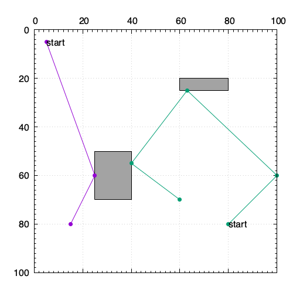

gnuplotで簡易ビジュアライザ¶
概要¶
- gnuplotは、2次元や3次元のグラフを作成するツールだが、簡単なビジュアライザとしても利用できる
- c++でプログラムを書いてpltファイルを出力してプロットして確認、みたいな利用
- pythonならmatplotlib
- AHCやTopcoder MMでは公式ビジュアライザが用意されており、そちらで十分な場合が多いが、より細かい情報や焼きなましの過程など確認したい場合、自分で用意したほうが良い
- よく使う機能をまとめておく
- (4系と5系での違いがあったりするので、使っているバージョンの本家マニュアルを参照したほうが良い)
Links¶
Usage¶
簡単な使い方としては、gnuplotのコマンド書いたファイル(例えばvis.plt)を用意して、$ gnuplot vis.pltと実行する。

# vis.pltの中身の例
set terminal pngcairo size 500,500
set output "output.png"
set size ratio 1
set grid
set nokey
set xrange [0:100]
set yrange [100:0]
set format x ""
set x2tics
set mxtics 10
set mx2tics 10
set mytics 10
set label 1 "start" at 5,5 front
set label 2 "start" at 80,80 front
set object 3 rect from 25,50 to 40,70 fc "#a3a3a3"
set object 4 rect from 60,20 to 80,25 fc "#a3a3a3"
plot "-" w lp pt 7, "-" w lp pt 7
5.0 5.0
25.0 60.0
15.0 80.0
e
80.0 80.0
100.0 60.0
63.0 25.0
40.0 55.0
60.0 70.0
e
コマンドメモ¶
set関連¶
# pngで出力、画像サイズ
set terminal pngcairo size 500,500
# 出力ファイル名
set output "output.png"
# サイズ比を1にする
set size ratio 1
# 大きな目盛の表示
set xtics 10
set ytics 10
# 小さな目盛の表示
set mxtics 10
set mxtics 10
# 軸の数字の非表示
set notics
または
set format x ""
# 格子の表示
set grid
# 凡例の非表示
set nokey
# 表示範囲
set xrange [0:100]
set yrange [0:100]
反転させる場合は、(5系からreverseは使えない)
set yrange [100:0]
# ラベルの表示
set xlabel "label x"
set ylabel "label y"
# タイトルの表示
set title "graph title"
# 上または右の目盛り
set x2tics
set y2tics
object関連¶
<id>は連番でかぶらないように振っておく。
# 長方形の表示
set object <id> rect from 25,50 to 40,70 fc "#a3a3a3"
# 円(楕円)、多角形なども表示できる
(省略)
# 文字の表示(frontは描画要素より前に表示される)
set label <id> "start" at 5,5 front
# 文字を中央揃えで表示
set label <id> "start" center at 5,5 front
font関連¶
set title "hoge" font "Times-Roman,20"
plot関連¶
# file.datの1列目と3列目をx,yにプロット
plot "file.dat" using 1:3
# 線の種類(withなどはwと省略可能)
plot "file.dat" using 1:2 with 線の種類 linecolor rgb 色 ...
## 線の種類
lines: 直線
docs: 点
points: 記号
lp: lines+points
impluses: x軸に垂線を下ろす(棒グラフ)
steps,fsteps,histsteps: ヒストグラム
boxes: 棒グラフ
yerrorbars,xerrorbars,xyerrorbars: 誤差付きデータ点
vector: ベクトル
# インラインデータ(データを埋め込む場合、"-"を指定してeまでがデータとして扱われる)
plot "-" w lp
0 0
1 2
e
# 複数データ(同じファイルに、2行以上の空行を区切りとして複数データがある場合、0-indexで指定できる)
plot "file.dat" index 0, "" index 1
# インラインで複数データ
plot "-" w lp, "-" w lp
5.0 5.0
25.0 60.0
15.0 80.0
e
80.0 80.0
100.0 60.0
63.0 25.0
40.0 55.0
60.0 70.0
e
プロットタイプ別¶
グリッド¶
vis.pltをダンプ、または、vis.pltを生成するスクリプトを用意noborder、noxtics、noyticsして、各セルを長方形objectとして表示
アニメーション¶
- 一応、pltファイル内でループを書くこともできるが、複数pltファイルを出力して、あとでまとめたほうがよいかも
# pltファイル内でループを書く場合の例
if(exist("n")==) n=0
filename = sprintf("out_%03d.png", n)
# plot ...
n=n+1
pause 0.1
if(n<50) reread
ファイルを経由しないで直接実行¶
FILE* gp;
if ((gp = popen("gnuplot", "w")) == nullptr) {
cerr << "error: pipe open error." << endl;
return;
}
std::stringstream ss;
ss << "set terminal png size 512,512\n";
ss << "set output \"" << filename << "\"\n";
ss << "set size ratio 1\n";
ss << "set title \"" << title << "\"\n";
ss << "set grid\n";
ss << "set nokey\n";
ss << "unset xtics\n";
ss << "unset ytics\n";
ss << "set xrange [0:10000]\n";
ss << "set yrange [10000:0] reverse\n";
//...
ss << "\n";
ss << "plot \"-\" w p\n";
ss << "-1 -1\n";
ss << "e\n";
fprintf(gp, ss.str().c_str());
fflush(gp);
fprintf(gp, "exit\n");
pclose(gp);
// gnuplot.hh
#pragma once
#include <cassert>
#include <cstdio>
#include <memory>
#include <sstream>
#include <string>
class Gnuplot {
std::unique_ptr<FILE, decltype(&pclose)> gp;
int obj_id;
public:
Gnuplot() : gp(popen("gnuplot", "w"), pclose), obj_id(1) {
assert(gp);
}
~Gnuplot() {
print("exit");
}
void print(const std::string& line) {
fprintf(gp.get(), line.c_str());
fprintf(gp.get(), "\n");
fflush(gp.get());
}
void set_label(int y, int x, const std::string& label, bool center = true) {
std::stringstream ss;
ss << "set label " << obj_id++ << " \"" << label << "\" ";
if (center) ss << "center ";
ss << "at " << x << "," << y << " front";
print(ss.str());
}
void set_rect(int y1, int x1, int y2, int x2, const std::string& color) {
std::stringstream ss;
ss << "set object " << obj_id++ << " ";
ss << "rect from " << x1 << "," << y1 << " to " << x2 << "," << y2 << " ";
ss << "fc \"" << color << "\"";
print(ss.str());
}
// 以下、設定例・サンプル
void initialize(const std::string& file_path, const std::string& title) {
std::stringstream ss;
ss << "set terminal pngcairo size 800,800\n";
ss << "set output \"" << file_path << "\"\n";
ss << "set size ratio 1\n";
ss << "set title \"" << title << "\"\n";
ss << "set grid\n";
ss << "set nokey\n";
ss << "set xrange [0:100]\n";
ss << "set yrange [100:0]\n";
ss << "set format x \"\"\n";
ss << "set x2tics\n";
ss << "set mxtics 10\n";
ss << "set mx2tics 10\n";
ss << "set mytics 10\n";
print(ss.str());
}
void set_grid(int H, int W, int size) {
for (int h = 0; h < H; h++) {
for (int w = 0; w < W; w++) {
std::string color = "#ffffff";
if (h % 2 == 0)
color = "#ff7f7f";
else if (w % 4 == 0)
color = "#7fff7f";
set_rect(h * size, w * size, (h + 1) * size, (w + 1) * size, color);
std::stringstream ss;
ss << "(" << h << "," << w << ")";
set_label(h * size + size / 2, w * size + size / 2, ss.str());
}
}
}
void set_sample_plot() {
print("plot \"-\" w lp pt 7");
print("5.0 5.0");
print("25.0 60.0");
print("e");
}
void set_sample_plot2() {
print("plot \"-\" w l lw 3 lc rgb \"gray\"");
print("5 5");
print("5 15");
print("");
print("5 5");
print("15 5");
print("");
print("e");
}
void set_sample_plot3() {
print("plot \"-\" w l lw 3 lc rgb \"gray\", \"-\" w l lw 3 lc rgb \"red\"");
print("5 5");
print("5 15");
print("");
print("5 5");
print("15 5");
print("");
print("e");
print("15 15");
print("15 25");
print("");
print("15 15");
print("25 15");
print("");
print("e");
}
};